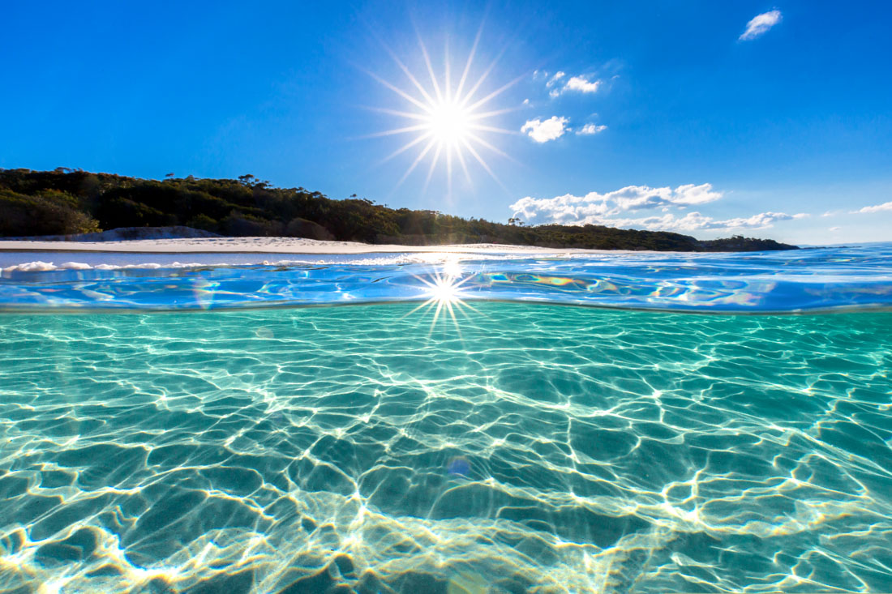
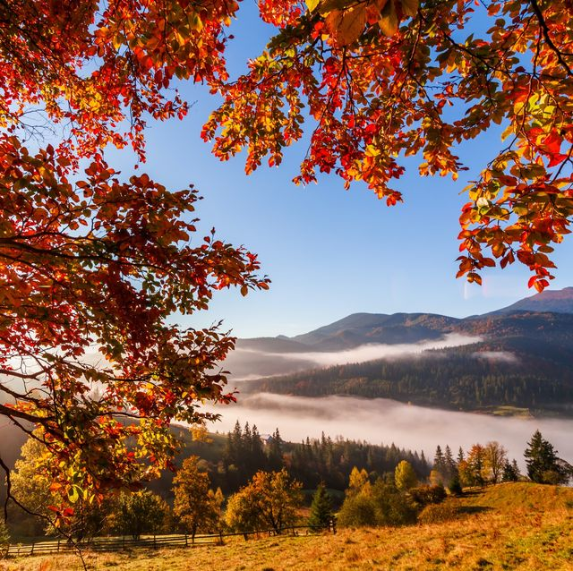
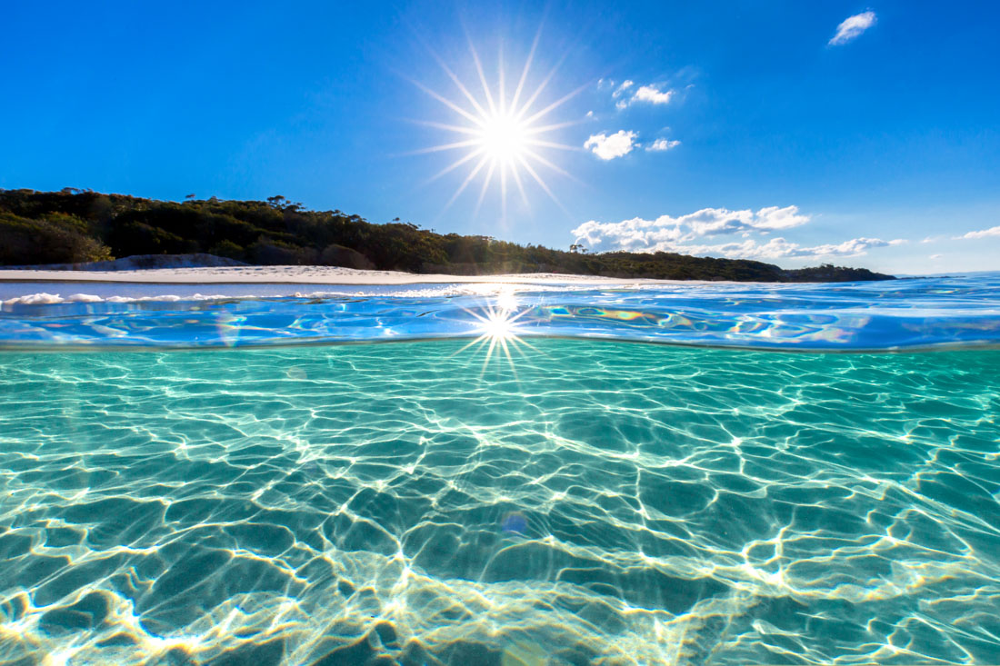
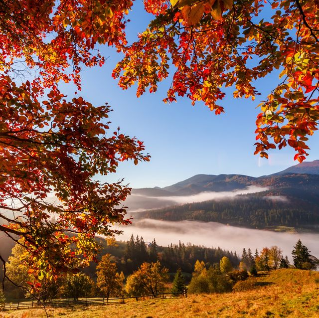

Welcome to Climate Information
You will learn more about climate change and various seasons in our site

You will learn more about climate change and various seasons in our site
4 seasons
 



the coldest season of the year, in the northern hemisphere from December to February and in the southern hemisphere from June to August.
the season after winter and before summer, in which vegetation begins to appear, in the northern hemisphere from March to May and in the southern hemisphere from September to November.
the warmest season of the year, in the northern hemisphere from June to August and in the southern hemisphere from December to February.
During this time, temperatures will start to drop, daylight times will become shorter to prepare for the Winter Solstice, and trees will begin to shed their leaves.
A four-season climate has the benefit of more types of activities. Each season offers a different group of sports to play as well as different hobby activities. The variety of weather changes makes a four-season climate interesting.
Call to action!
If you want to take a stance against the global warming, click on the button to learn more